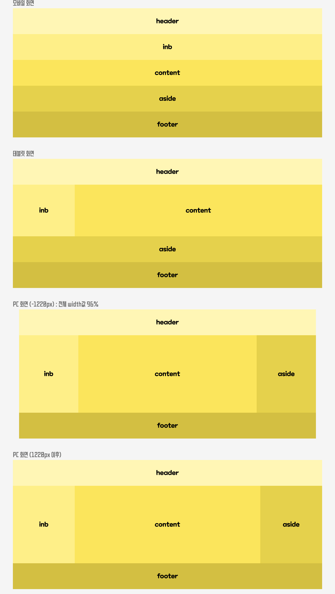

미디어 쿼리
해상도에 따라 CSS를 분기시키는 반응형 웹에서는 없어서는 절.대 안되는 기법입니다.
태블릿,모바일기기 마다 가로폭이 다른데 크롬브라우저의 경우 개발자도구(F12)를 열고
Toggle device Toolbar를 눌러 기기마다 해상도를 확인할 수 있고 기기 모델도 추가 가능합니다.
다음 트로이(http://troy.labs.daum.net/)에서는 실제 작동 화면을 확인할 수 있습니다.
미디어 쿼리는 아래와 같은 상황에 사용할 수 있습니다.
▷ CSS @media와 @import .@규칙을 사용해 특정 조건에 따라 스타일을 적용할 때
▷ HTML요소에 media 특성을 사용해 특정 매체만 가리키게 할때
▷ Window.matchMedia()와 MediaQueryList.addListener() (en-US) JavaScript 메서드를 사용해 미디어 상태를 판별하고 관측 (en-US)할 때.
01_ <link ~ media="">
<link rel="stylesheet" type="text/css" media="all and (min=width:1000px)" href=style_pc.css">
<link>요소에 사용해서 특성이 조건에 맞을때 CSS파일을 불러오는 방법입니다. 최소 가로폭이 1000px 즉, 1000px보다 넓은 상태일때에 style_pc.css를 연결한다는 뜻입니다.
02_ @media
스타일 시트내에 @media 를 사용해서 조건이 성립하는 경우 {}안의 스타일이 적용됩니다.
첫 로딩시 성능 저하가 안되도록 CSS 파일 내부에서 조건에 따라 분기시키는 것이 일반적인 형태입니다.
@media all and (min-width: 1000px){
모든기기에서 해상도 최소 1000px인 경우 적용할 속성입력
}
|2-1| 미디어 유형
미디어 유형은 장치의 범주를 나타냅니다. not이나 only논리연산자를 사용할 때가 아니면 선택사항이고 all은 기본값입니다.
| Media Type | 설명 |
|---|---|
| all | 모든 미디어 장치에 사용. 기본값 |
| 프린터에 사용 | |
| speech | 스크린리더기가 페이지 읽는데 사용 |
| screen | PC,태블릿,스마트폰 등에 사용 |
|2-2| 미디어 특성
미디어 특성은 사용자 에이전트, 출력장치, 환경 등의 특징을 나타냅니다. 마찬가지로 선택 사항이며 표현식은 괄호()로 감싸주어야 합니다.
| 미디어 특성 | 설명 |
|---|---|
| color | 출력장치의 색상 채널별 비트수, 흑백은 0 |
| hover | 사용자가 요소 위에 마우스오버할 수 있는지? |
| any-pointer | 사용 가능한 입력 방식 중 하나가 포인팅 장치인지? 얼마나 정확한지? |
| aspect-ratio | 가로세로비 |
| color-gamut | 사용자 에이전트와 출력 장치가 지원하는 색상의 대략적 범위 |
| color-index | 출력 장치의 색상 검색 테이블 항목 수, 미존재시 0 |
| grid | 장치가 그리드와 비트맵 스크린 중 어느것을 사용하는지 |
| height | 뷰포트의 높이 |
| inverted-colors | 색상을 반전중인지 여부 |
| orientation | 뷰포트의 방향 |
| pointer | 주 입력 방식이 포인팅 장치인지? 얼마나 정확한지? |
| scripting | 자바스크립트 등 스크립트 사용 가능 여부 탐지 |
| width | 스크롤바를 포함한 뷰포트 너비 |
간단한 예시를 들어보겠습니다
예시1)
@media only screen and (min-width: 768px) {
body {color:red}
}
// 화면이 768px보다 커지면 글자색을 빨간색으로 지정합니다.
예시2)
@media only screen and (orientation: protrait) {
body {backgorund:blue}
}
// 모바일 기기를 세워 가로보다 긴 세로방향이 되면 배경색을 파란색으로 지정합니다.
//protrait : 가로<세로 //landescape : 가로>세로
03_ 미디어 쿼리를 흉내내는 script
소제목 그대로 스크립트를 활용해서 미디어쿼리를 흉내낼 수 있습니다.
function initLayou() {
var widthWin = $(window).width();
if (widthWin < 1000 $('body').addClass('mob').removeClass('pc');
else $('body').removeClass('mob').addClass('pc');
}
//창의 가로크기를 재고 1000px보다 좁으면 body에mob클래스르 붙이고 pc클래스는 제거하고,
1000px이상이면 body에 pc클래스를 붙이고, mob클래스는 제거합니다.
$(window).resize(function(){
initLayout();
});
//미리 만들어둔 스크립트를 창크기가 바뀔때마다 실행합니다.
활용
오늘 배운 미디어 쿼리를 이용해서 아래 레이아웃구조를 모바일, 태블릿에서도 볼 수 있는 반응형웹으로 구현해보겠습니다. 전혀 어렵지 않으니 잘 따라와 주세요. 미디어 특성은 min-width를 사용해서 작업하였습니다. min-width를 사용했으므로 기본 css속성은 모바일 버전으로 구성되겠네요.
